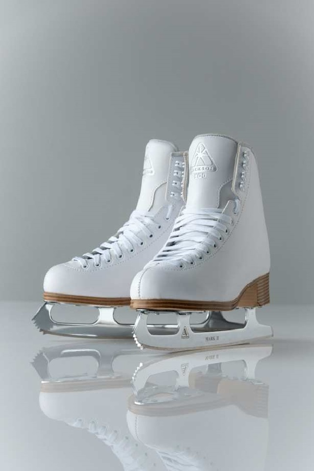

Jätä tori.fissä myymäsi tavara tori-automaatin pakattavaksi ja lähetettäväksi. Pilotoimme tori-automaatteja Suomen suurimmissa kaupungeissa 1.9.2023 alkaen.
Löydä lähin tori-automaattisi täältä ja saat selville, onko tori-automaatin käyttö mahdollista juuri sinulle.
- Helsinki, Tripla
- Helsinki, Redi
- Helsinki, Itis
- Helsinki, Forum
- Vantaa, Jumbo-Flamingo
- Espoo, Sello
- Espoo, Iso Omena
- Tampere, Ratina
- Tampere, Koskikeskus
- Turku, Hansakortteli
- Turku, Skanssi
- Pori, Puuvilla
- Kuopio, Kauppakeskus Aapeli
- Jyväskylä, Forum
- Oulu, Kauppakeskus Valkea
Tori-apuri laskee lähetyskulut tori.fi ilmoituksen tuotetyypin mukaan ja tori-automaatti tarkistaa tavaran mahtumisen tuotetyypin mukaisen paketin mittoihin konenäön avulla. Jos tavaran mitat ylittävät ilmoitukseen merkityn tuotetyypin mitat, tori-automaatti pyytää maksamaan paketointi- ja lähetyskulujen erotuksen tuodessasi tavaran Tori-automaattiin pakattavaksi ja lähetettäväksi.
Tori.fissä myymäsi tuote
Lasten kaunoluistimet koko 32
Tuotetyyppi Lasten luistimet
Pakkauskulut
max. 35 x 35 x 35 cm, 2 kg
3,00 €
Postin lähetyskulut
L-paketti
max. 37 x 36 x 60 cm, 25 kg
Toimitus 1-3 työpäivässä
10,90 €